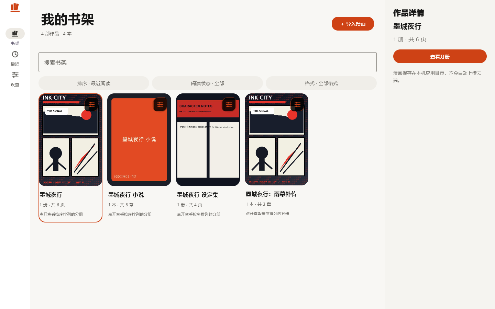
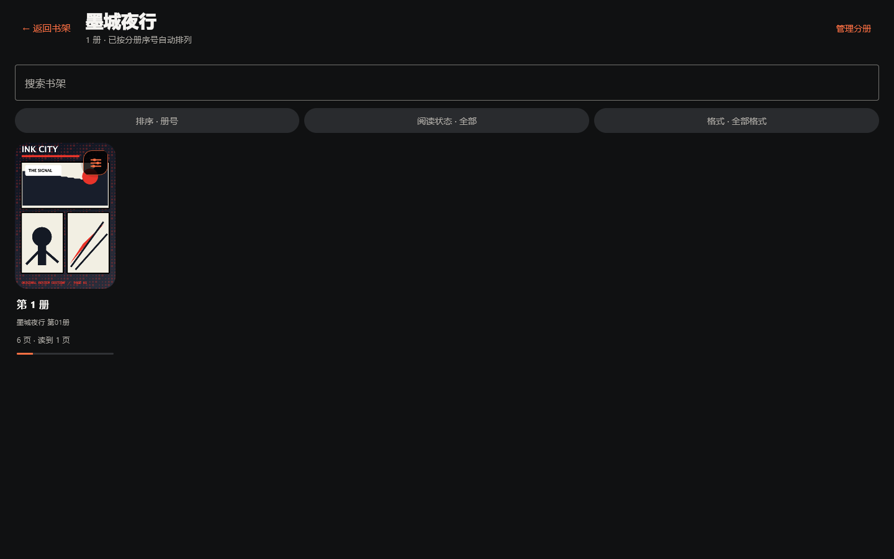
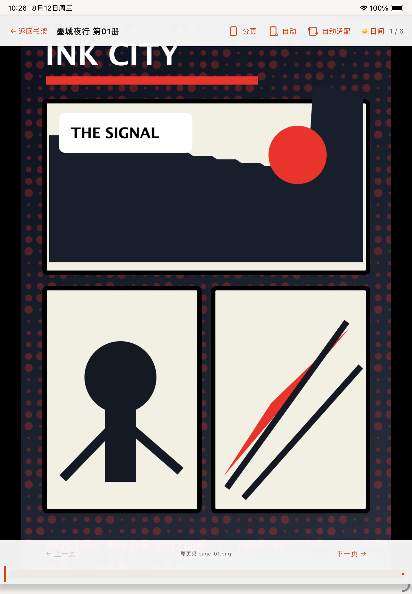
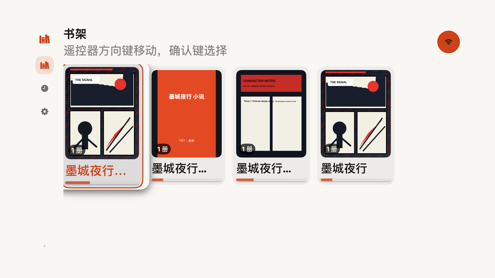

一本一本，整理成喜欢的样子
同一作品自动归组，分册自然排序。用搜索、筛选和阅读状态，找回想看的那一本。
漫画、PDF、小说。
一个属于你的本地书架，
留给阅读多一点空间。
Windows 已上线 · 其他平台尚未发布
导入自己拥有的内容，整理成自己的书架。
从第一格漫画，到最后一行文字，专心读下去。
作品归组、分册排序、阅读进度。
喜欢的每一本，都有自己的位置。




Windows 应用实拍 · 截图使用原创示例内容，实际界面以当前版本为准。
同一作品自动归组，分册自然排序。用搜索、筛选和阅读状态，找回想看的那一本。
单页、双页或连续纵向，随内容切换。调整方向、缩放与裁边，让画面舒服地展开。
支持 TXT 与无 DRM EPUB，配合目录、搜索、书签和排版设置，接着上次的地方读。
漫架是阅读器，也是你自己的书架。
导入自己拥有的内容，无需漫架账号，
离线也能继续阅读。
手机、平板、电脑与电视，延伸阅读的空间。
Xbox 版本也已纳入上架计划。
触控翻页、纵向阅读，照顾每一种握持方式。


HarmonyOS / iPad 界面展示 · 尚未发布
桌面用键鼠，电视用遥控器。阅读不止一种姿势。

Apple TV 界面展示 · 尚未发布
Windows 版现已上线。更多平台，正在准备中。
在电脑上，展开你的书架。
Microsoft Store （新窗口）为 Mac 上的阅读时光准备。
尚未发布让好故事，随 iPhone 同行。
尚未发布更开阔的触控阅读空间。
尚未发布覆盖手机、平板与折叠屏。
尚未发布手机、平板、2in1 与智慧屏。
尚未发布用遥控器，翻开新的一页。
尚未发布把自己的书架，搬到大屏。
尚未发布客厅里的另一种阅读可能。计划上架 Xbox 平台。
尚未发布售价、系统要求与可用地区以商店页面为准。其他平台上线后，这里会更新正式下载入口。
漫架是一款本地阅读器，不提供在线书源或内置作品。请导入自己拥有或已获授权的漫画、PDF、TXT 与无 DRM EPUB 文件。页面中的作品为原创演示内容。
核心本地阅读无需漫架账号，导入后的内容可以离线阅读。通过商店获取应用需要网络；主动使用局域网传送等功能时，需要相应的网络环境。
漫架采用本地优先设计，书库与阅读进度保存在各设备上，不会自动上传到漫架云端。多平台不代表云端自动同步，迁移与备份能力请以所用平台的实际发布版本为准。
目前仅 Windows 版已发布。Android、iOS、iPadOS、macOS、HarmonyOS、Android TV、Apple TV 与计划上架的 Xbox 暂无公开下载地址，正式上线后会在本页更新，不承诺具体发布日期。